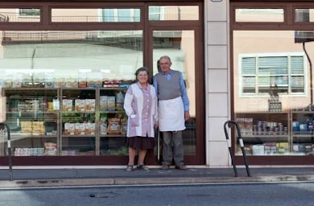
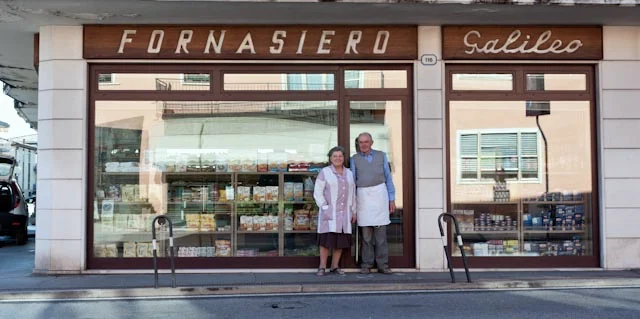
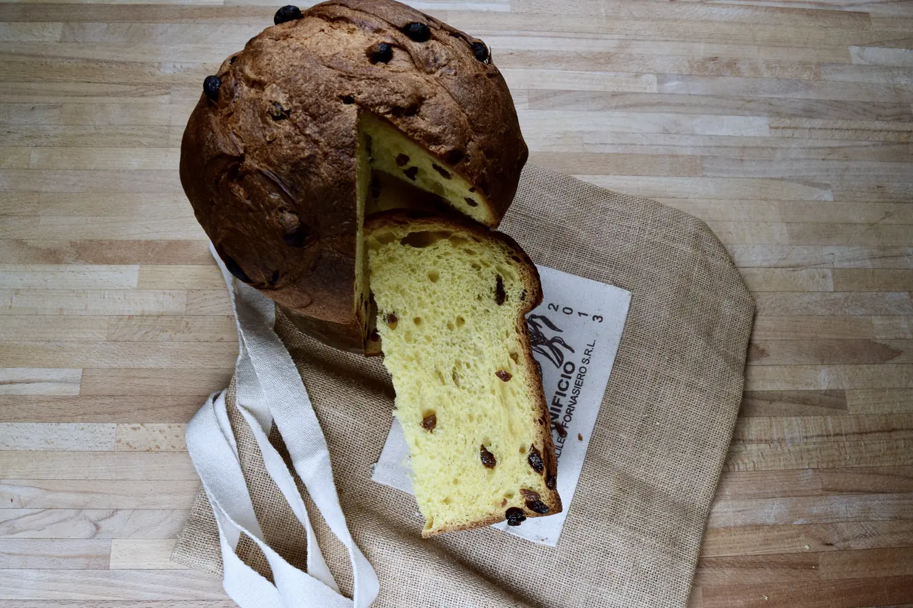
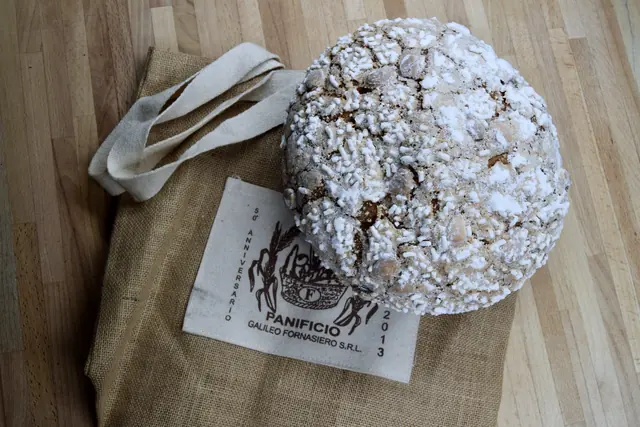
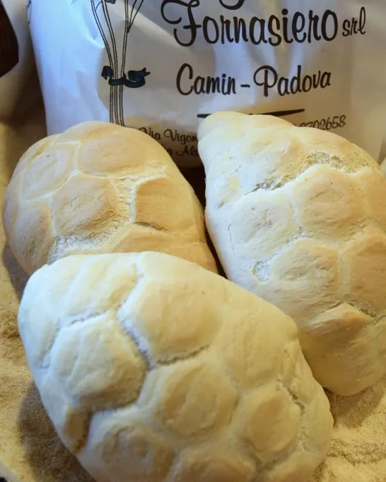

Via Vigonovese 116
Laboratorio e negozio, vicino al semaforo, 35127 Camin (Padova)
| Lunedì‑venerdì | 8.30‑13.45 e 16.30‑20.00 |
|---|---|
| Mercoledì | pomeriggio chiuso |
| Sabato, domenica | orario al telefono |
Panificio Galileo Fornasiero
Chiama 049 870 26 58
Il pane si fa ogni giorno nel nostro laboratorio di via Vigonovese e si trova nei due negozi di Camin.

Laboratorio e negozio, vicino al semaforo, 35127 Camin (Padova)
| Lunedì‑venerdì | 8.30‑13.45 e 16.30‑20.00 |
|---|---|
| Mercoledì | pomeriggio chiuso |
| Sabato, domenica | orario al telefono |
Negozio, 35127 Camin (Padova)
| Lunedì‑venerdì | 8.30‑13.45 e 16.30‑19.30 |
|---|---|
| Sabato | 8.30‑13.30 |
| Domenica | orario al telefono |
Cellulare 338 660 06 64
Siamo specializzati nella fornitura di pane per alberghi, bar, ristoranti e rivendite.
Zona, giorni e ora di consegna si concordano con il laboratorio di via Vigonovese.
Per email: info@panificiogalileofornasiero.it (oggetto già scritto: Fornitura pane)
Anche per le famiglie: consegne a domicilio in zona Camin e dintorni.
Vedi i pani che facciamo →A Natale panettone e focaccia, con l'antica ricetta di Galileo Fornasiero. A Pasqua colomba e focaccia. Si prenotano in negozio o al telefono.
Pezzature, prezzi e ultimo giorno utile: al banco o al telefono.


Le nostre focacce, preparate come 50 anni fa.
Oltre 30 tipologie di pane, fatte ogni giorno nel nostro laboratorio di via Vigonovese.

Gnocchi, tagliatelle, tagliolini e bigoli. Farina, uova e tanto amore sono i tre ingredienti.
Pizze margherita, prosciutto e funghi, quattro stagioni, porcini e grana, o con i gusti che chiedete voi. Focacce alle olive, alle cipolle, con patate, rosmarino e mozzarella.
Con una vasta scelta di affettati misti.
Crostate di marmellata o crema al limone, torta alle carote, plumcake allo yogurt, pan di Spagna con le mele. Le novità sono nella Bacheca di Romina.
Siamo Fornasiero, fornai anche nel nome.
Gli zii Domenico e Pasquale avevano rilevato un forno chiuso a Villatora di Saonara nel 1928. Galileo è arrivato a Camin il primo aprile del 1963. Oggi con lui ci sono la moglie Fidalma, dietro al banco da sessant'anni, i figli Filippo e Romina e Michele Daniele.
Galileo e Fidalma, al Mattino di Padova